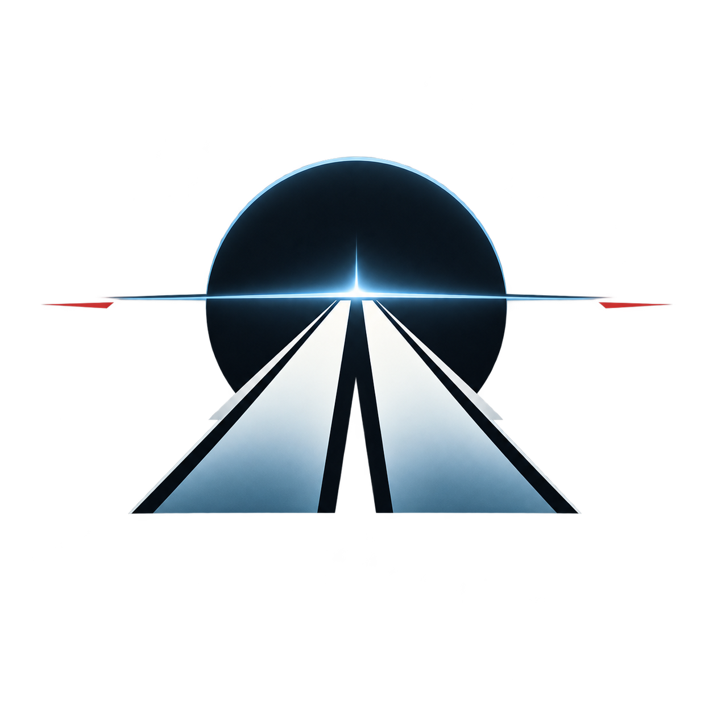

Site and sound by John Ryder ProductionsJohn RyderProductions
Music and sound for the space in between
Picture
Interactive
Redesigns
Compositions

Site and sound by John Ryder ProductionsMusic and sound for the space in between
“I make music and sound for the strange feeling of being somewhere you’ve never been before.”